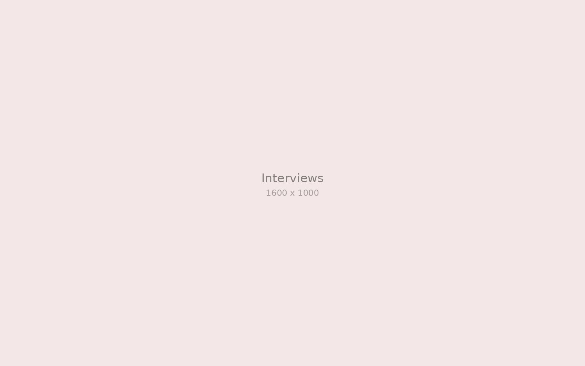
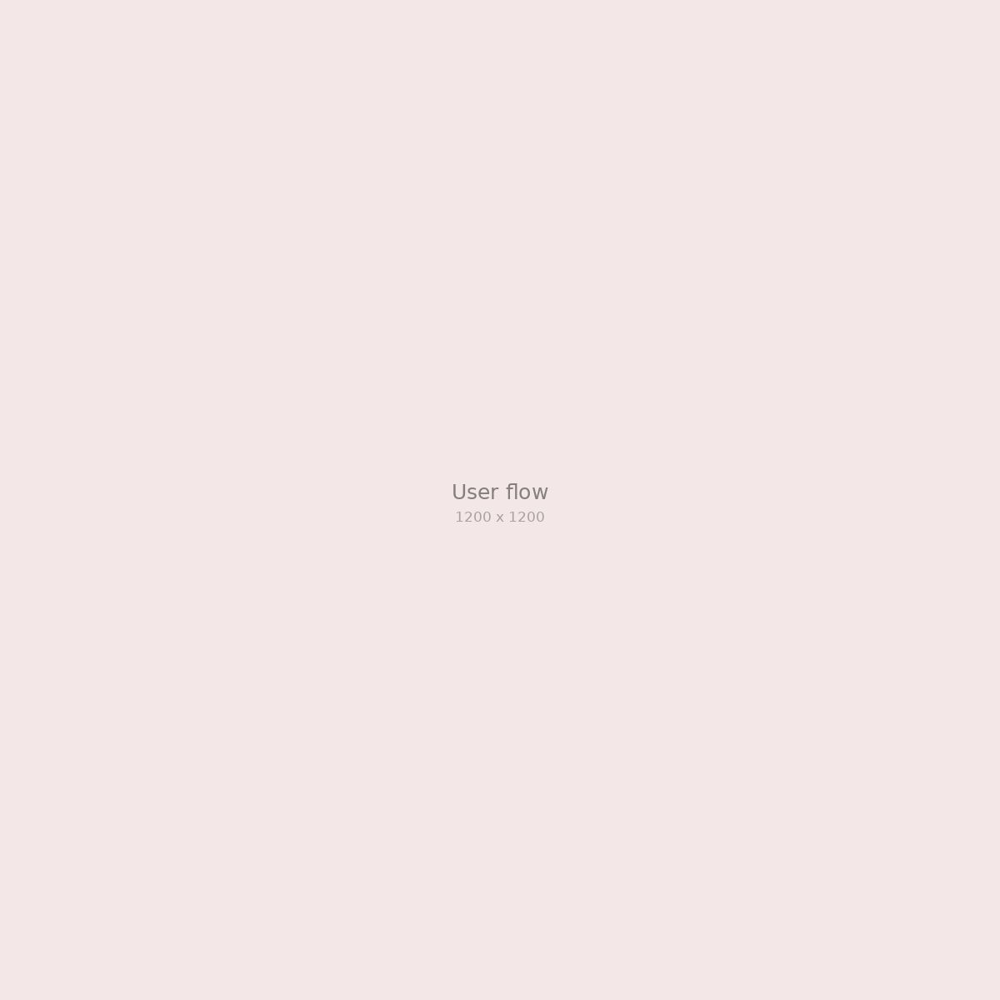
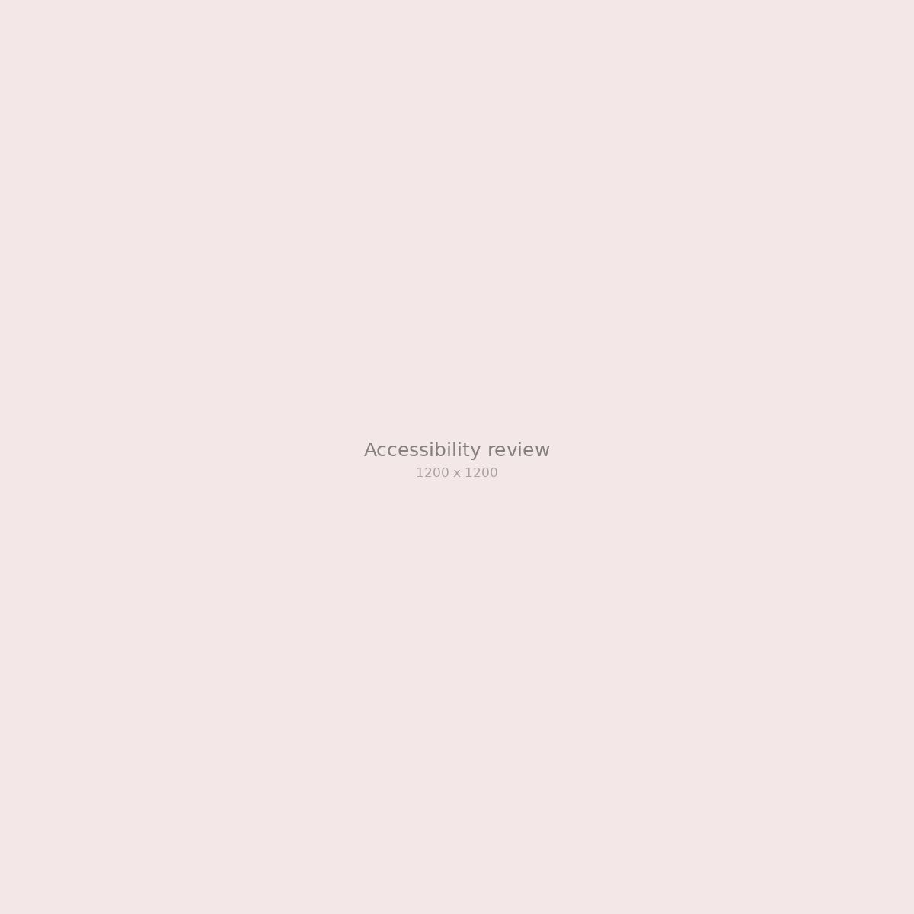

Personal project
Taken, With Love
Rawat is a shared medication reminder for elderly parents and the adult children who look after them. Parents confirm a dose with one large button, and the family can see it without a phone call.
It started with my own family. I ran the interviews, designed both experiences, and tested them with parents and their children.
- My role
- Product designer
- Timeline
- Mar - May 2025
- Team
- Solo, with mentor feedback
- Tools
- Figma, ProtoPie
"Sudah minum obat?"
My grandmother takes several medicines a day, and our family kept calling each other to ask whether she had taken them. Many families I talked to had the same daily loop of check-in calls.
Reminder apps assume you are alone
Most reminder apps expect the patient to manage everything. In many families care is shared, and the older adult may not be comfortable with small text or crowded menus.
Parents did not want to feel watched. They wanted their children to stop worrying.
Morning and evening routines
I interviewed families and observed how parents took their medicine. Parents preferred one big, familiar action, children wanted a quiet signal instead of alarms, and pill colors were easier to remember than names.

Two experiences, one shared timeline
I designed a very simple app for the parent and a calm overview for the family, connected by a single timeline of doses.
- 01
One button for the parent
The screen shows a photo of the medicine and one large "Taken" button. Text starts large and follows the phone's accessibility settings.
- 02
A quiet view for the family
Family members see a daily timeline and only get an alert when a dose is missed for more than an hour.
- 03
Accessibility review
I checked contrast, text size, and touch targets on the phones parents actually use.


Confident after one introduction
In testing, parents confirmed their doses without help after a short introduction, and their children checked the timeline instead of calling.
Less checking in, more catching up
The final concept keeps the parent's side to a single action and the family's side to a single glance.

Fewer worried phone calls
Families in testing said the timeline replaced most of their daily medicine check-in calls. The accessibility patterns from this project now shape every project I work on.
Privacy is part of care
Designing for my own family made me careful about dignity. Next, I would explore voice confirmation for parents with low vision.
thanks for reading (•‿•)